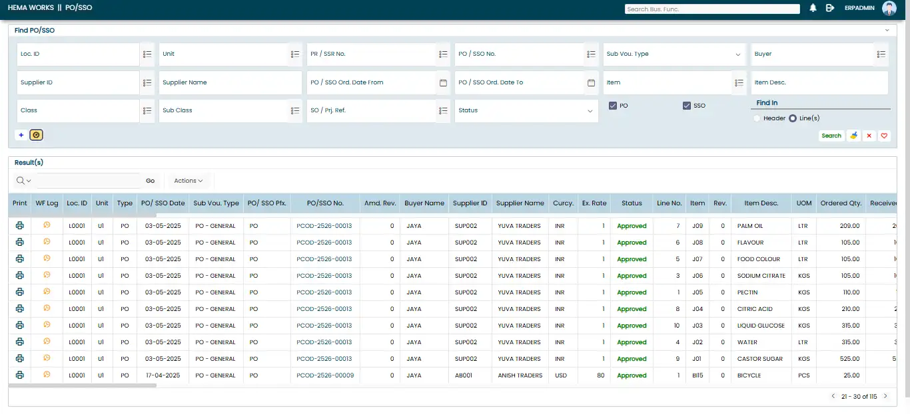
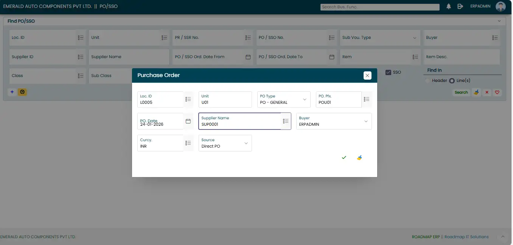
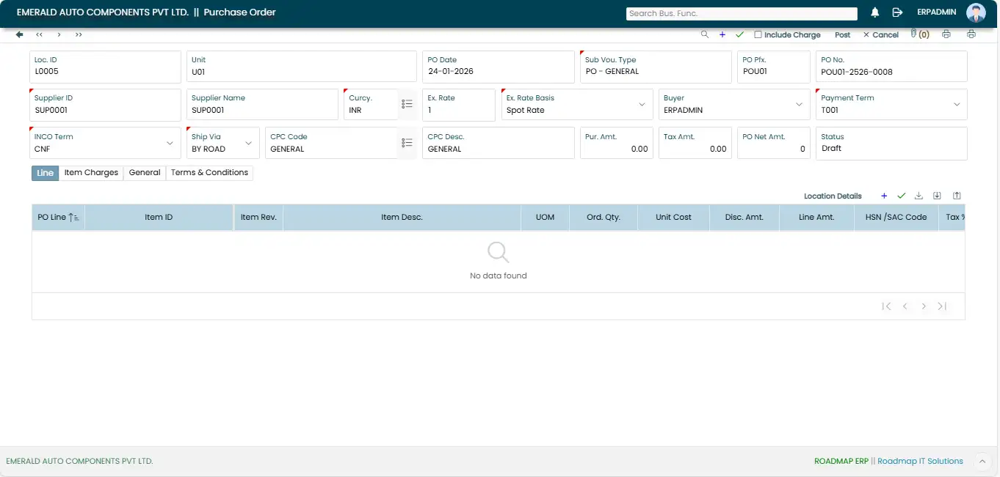
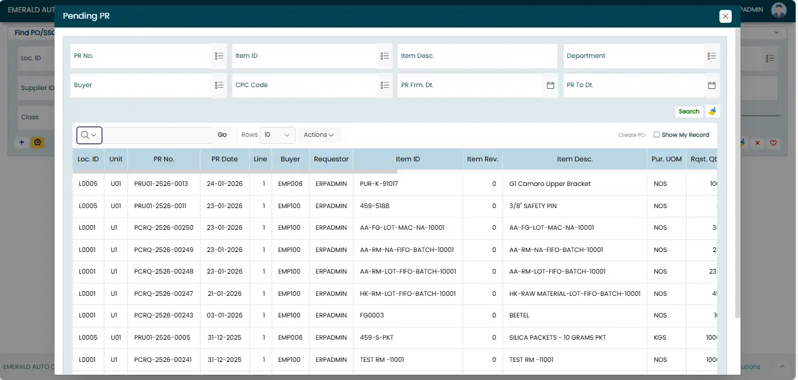
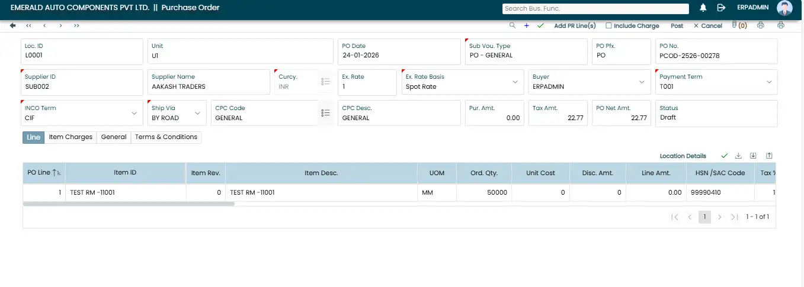
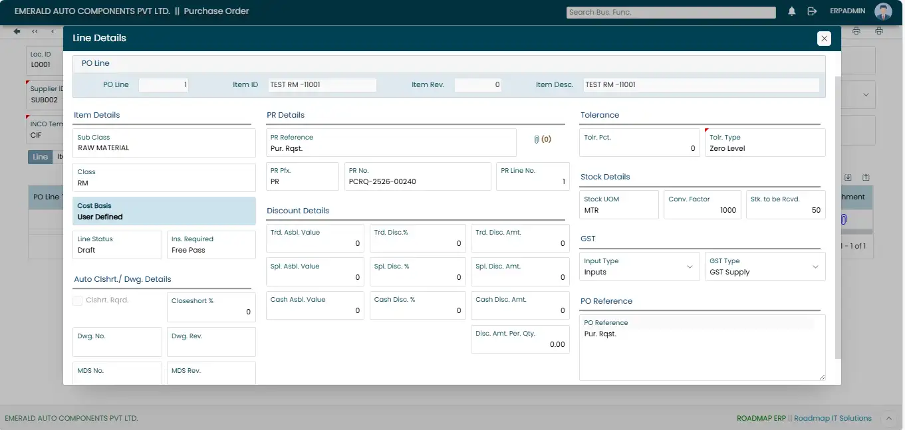
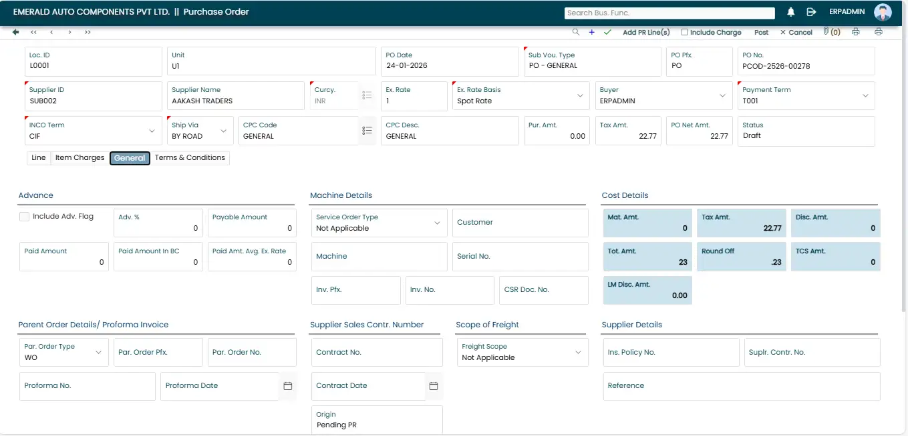
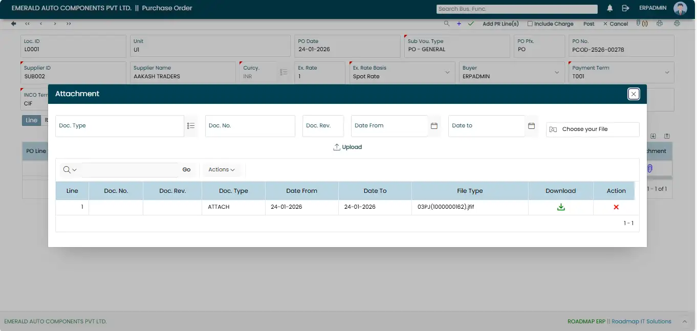
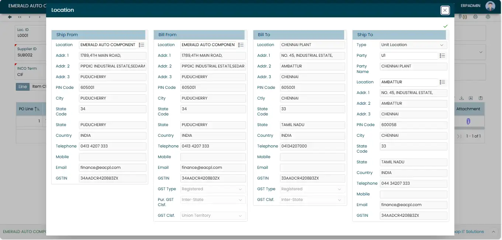

<div data-category="Purchase Order" data-title="Purchase Order" data-updated="December 01, 2025" data-contributors="RoadmapIT" data-breadcrumb="Home,Purchase Order,Purchase Order">
  <div class="page-content">
    <p>The Purchase request converted from the RFQ/PO conversion screen is displayed in the Purchase Order Screen. The Purchase order can also be created directly in the purchase order screen based on the application control flag. The tax and shipment details of the PO are also included in this screen.</p>

    <h5>Navigation path:</h5>
    <p class="fs-6">Supply Chain \ Purchasing \ Transaction \ Purchase order</p>

    

    <ul style="list-style-type: none; align-content: center">
      <li class="mouse-icon">Search screen displays the list of Purchase Orders with the relevant details and its status.</li>
      <li class="mouse-icon">Click on search to filter all the records.</li>
      <li class="mouse-icon">User can filter the respective documents by entering the search parameters at the header.</li>
      <li class="mouse-icon">Using search, system displays the results relevant to the search parameters entered.</li>
      <li class="mouse-icon">On -click; the corresponding transaction record will be displayed.</li>
      <li class="mouse-icon">Using <i class="bi bi-eraser text-secondary"></i> icon, entered search parameters can be cleared.</li>
      <li class="mouse-icon">To close the screen, use <i class="bi bi-x-lg text-danger"></i> icon.</li>
      <li class="mouse-icon">
        By Clicking the
        <i class="bi bi-plus fs-4 mx-2 text-primary"></i>
        Add button we can create new Purchase Orders by entering all the mandatory fields displayed in the Add dialog.
      </li>
    </ul>

    

    <ul style="list-style-type: none; align-content: center">
      <li class="mouse-icon">Select the Unit location, Unit details will be auto updated.</li>
      <li class="mouse-icon">Select the PO Type.</li>
      <li class="mouse-icon">PO Date is updated with sys date.</li>
      <li class="mouse-icon">Select the corresponding Prefix for the Order and Select the supplier from the LOV.</li>
      <li class="mouse-icon">
        Click on
        <i class="bi bi-check-lg fs-4 mx-1 text-success"></i>
        button to create the purchase order.
      </li>
    </ul>

    
    <ul style="list-style-type: none; align-content: center">
      <li class="mouse-icon">Click Add PR Lines button to add the line Items from pending PR.</li>
    </ul>

    
    <ul style="list-style-type: none; align-content: center">
      <li class="mouse-icon">Filter the PR Document and Select the line to Click on Add line button.</li>
    </ul>

    
    <ul style="list-style-type: none; align-content: center">
      <li class="mouse-icon">Enter the Line item and the Unit cost. The Extended cost is calculated accordingly.</li>
      <li class="mouse-icon">Enter the Discount % field if applicable.</li>
      <li class="mouse-icon">Click the PO /GRN Price button – for checking Previous Price.</li>
      <li class="mouse-icon">Click on Line details.</li>
    </ul>

    
    <ul style="list-style-type: none; align-content: center">
      <li class="mouse-icon">Update Promise Date- click the button the schedule promise date is updated.</li>
      <li class="mouse-icon">Go to General Tab.</li>
    </ul>

    
    <p>In Advance Tab the advance payable amount is given and saved. The advance payable amount can be given lesser than the term advance amount but it cannot be given greater than the term advance amount.</p>
    <ul style="list-style-type: none; align-content: center">
      <li class="mouse-icon">Check the Total PO Value in the header.</li>
      <li class="mouse-icon">The SO Details are viewed from the SO/project dialog.</li>
      <li class="mouse-icon">Purchase Order Required Date and Promise date will be entered.</li>
      <li class="mouse-icon">Purchase Order can be cancelled in header and Line wise by pressing the Cancel button.</li>
    </ul>
    <p>The following screen is used to attach files.</p>

    
    <ul style="list-style-type: none; align-content: center">
      <li class="mouse-icon">
        Press the
        <i class="bi bi-paperclip fs-4 mx-2"></i>
        button to attach a file.
      </li>
      <li class="mouse-icon">
        Use the
        <i class="bi bi-x fs-4 mx-2 text-danger"></i>
        button to remove the attached record.
      </li>
      <li class="mouse-icon">
        Press
        <i class="bi bi-download fs-5 mx-1 text-muted"></i>
        button to open the attached file.
      </li>
    </ul>

    
    <ul style="list-style-type: none; align-content: center">
      <li class="mouse-icon">Supplier Location is automatically updated based on the default ship/bill location.</li>
      <li class="mouse-icon">The Document will be sent for approval using the Post button.</li>
      <li class="mouse-icon">The necessary work flow operations are done in the Workflow document control screen.</li>
      <li class="mouse-icon">To approve the document, Navigate to the Workflow approvals screen.</li>
      <li class="mouse-icon">
        Click on View details
        <i class="bi bi-info-circle text-primary"></i>
        button to view the specific document.
      </li>
      <li class="mouse-icon">Screen navigate into query screen to check the details.</li>
      <li class="mouse-icon">After click the back button, document navigate into Approval screen.</li>
      <li class="mouse-icon">Choose the Approval/forward/Return button field and click Process button required process performed.</li>
    </ul>
  </div>
</div>
